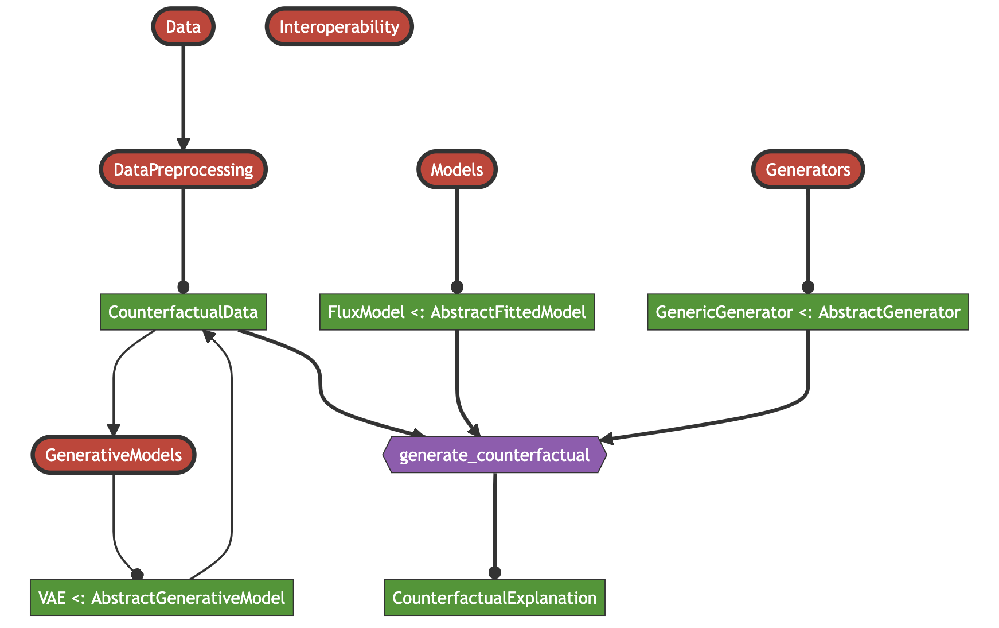

Package Architecture
Modular, composable, scalable!
The diagram below provides an overview of the package architecture. It is built around two core modules that are designed to be as extensible as possible through dispatch: 1) Models is concerned with making any arbitrary model compatible with the package; 2) Generators is used to implement arbitrary counterfactual search algorithms.[1] The core function of the package generate_counterfactual uses an instance of type <: AbstractFittedModel produced by the Models module and an instance of type <: AbstractGenerator produced by the Generators module.

[1] We have made an effort to keep the code base a flexible and extensible as possible, but cannot guarantee at this point that any counterfactual generator can be implemented without further adaptation.